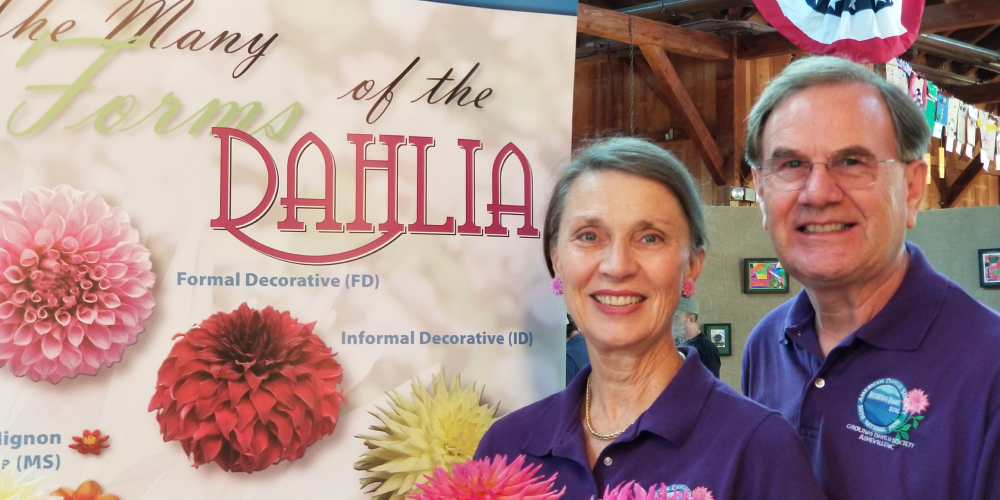
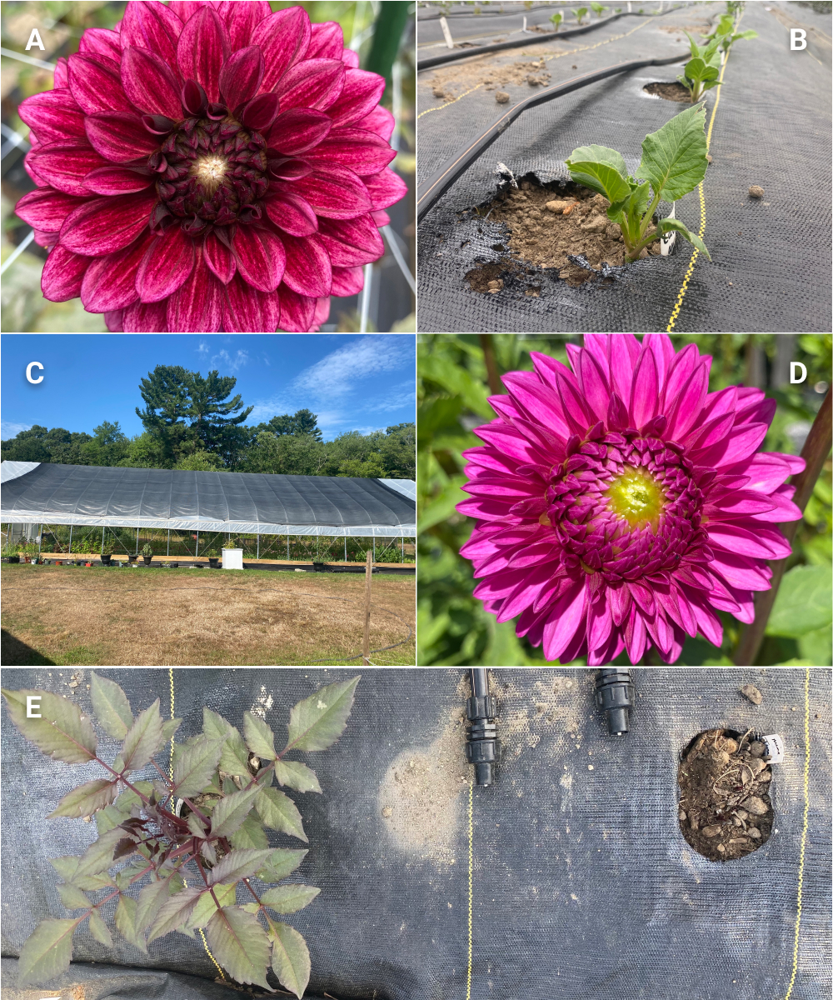

|
Hello dahlia friends!
We hope everyone is enjoying the summer and
staying hydrated and as cool as possible. The
summer weather has brought extreme heat and very
little rain which can make it a challenge to
keep our garden plants happy.
It is exciting to follow everyone online and get
updates via email and see that several of you
have dahlias that have started to bloom. Keep on
posting pictures ‘cause we never tire of seeing
your dahlias.
We love seeing everyone’s club tuber of the year
in bloom
#2022YDSBlizzard
A.
by: Jackie Burchard
B.
by: Robin Smith
C.
by: Howard Maurer
D.
by: Tina Shadone
Many of you were able to make it to our July
meeting and garden tour hosted at YDS member Roy
Christoph’s home in Wenham. It was such a
wonderful visit and tour given by Roy. No doubt
many of us will be growing lilies in addition to
dahlias next year. Bring your own picnics were
enjoyed with cold lemonade, banana bread, fresh
fruit and cookies. We are so glad to see many of
you come to take photos and everyone enjoying
the afternoon visit. Thank you again to Roy, we
are so grateful to have had an opportunity to
see your amazing collection of lilies in bloom.

Photos by Misty Florez
August 1st is the kick off to our membership
year and we are so glad to have so many new
members as well as so many renewing members
spreading the word about YDS. We are very
excited for the year’s worth of programming we
have outlined and want to make sure to let
everyone know to save the dates for club
meetings as they will surely be worth attending
(both virtually and in person)!!
In the meantime, looking forward to seeing you
online for our next meeting via Zoom!
Save-The-Date for Thursday, August 11 for an
evening program and check out the next meeting
section for more details.
– Misty & Carol
|
|
August 11th Meeting
Dahlia Shows and Exhibiting
With Jim Teeple and Kathy Burke of Mid Island
Dahlia Society

Photo by Jim Teeple and Kathy Burke
The end of August and the month of September are
dahlia show season. Have you ever been to a
local or national dahlia show? Dahlia shows are
not just for those who show or judge dahlias.
Attending a dahlia show is a wonderful way to
enrich your dahlia knowledge. We are excited to
have guest presenters Jim Teeple and Kathy Burke
from Mid Island Dahlia Society share their
expertise as ADS Senior Judges for dahlia shows
and what it means to judge and show dahlias.
Knowing more about the dahlia judging process
enhances your appreciation for dahlia blooms and
will give you a better understanding of growing
dahlias. We hope that this introduction by Jim
and Kathy may also inspire YDS members to attend
and maybe participate in a local show, or even
take a trip with Carol and Misty to the National
Dahlia Show.
Location:
Zoom (virtual):
https://us06web.zoom.us/j/82734209631?pwd=cVVMUVdrQlAzVXBMU3BhMGxKWExndz09
Date & Time:
Thursday, August 11th*, 7:00pm - 9:00pm (EST)
*log in at 6:50 to say hello and get settled.
Meeting will start promptly at 7:00pm
|
|
Member Spotlight
Leticia Fleischer
Photos by: Leticia Fleischer
 leticia.fashionista
leticia.fashionista
I suppose you could say that I’m a late bloomer
when it comes to raising dahlias. After a
successful career in Retail and Fashion
Merchandising and then raising our two children,
I actually stumbled into raising dahlias as the
happy outcome of an amazing Costco purchase I
made in 2014. To this day, the five unidentified
dahlias I purchased as part of an “assortment
pack” remain my favorites. In addition to having
adorned vases throughout my house, I also took
high resolution pictures of the flowers that I
used to create custom and very unique stationery
and journals for myself and friends alike.
The following year I grew 18 types of dahlias in
containers on my back deck and front porch. As
my son also shares my love of gardening he
started getting involved. This is where the
story really grows. Being an insanely organized
and process driven person, he helped me dig up
my tubers at the end of the season, split them,
label them and then pack them away. This allowed
us to expand the number of plants we were able
to start the following season and every season
since then.
Luckily, one of our closest family friends runs
a small organic farm in Stow and was nice enough
to give us greenhouse space early this spring,
resulting in our being able to start growing 170
tubers in mid-March. Some we have planted in our
garden, the rest we’ve given away to friends or
sold to customers of the farm. This year I have
20 tubers in pots on my back deck and 17 tubers
in my re-vamped and expanded front bed (24’ X
12’). I also have a new 60’ x 4’ shade garden
adjacent to the wetlands in my backyard thanks
to my son’s ingenuity during the housebound
months of Covid.
Growing dahlias has been a wonderful shared
experience for me with my 25-year-old son, Zach.
I treasure our time together, digging, dividing
and growing and talking. Working together in the
garden is a shared time of happiness and
wonderful conversation. Zack and I end almost
every work day walking the garden and pots to
see what’s blooming. Growing dahlias transcends
whatever stress or anxiety I have from my day. I
love sharing flowers with friends to bring some
extra delight to their day.
My Top 10
- Miss Delilah
- Great Silence
- Extase
- Firepot
- Linna
- Cornel
- Jowey Nicky
- Gallery Art Deco
- Cabana Banana
- Yellow Bird
What I love most about growing dahlias is the
diverse colors, textures and shapes of the
flowers finally in bloom as well as the
diversity of new people that I have met. Yankee
Dahlia Society has opened a world to meet new
friends with shared passions, kind hearts and
fascinating careers. Creating flower
arrangements and learning new aspects of design
are definitely my passion. I enjoy doing
arrangements for friends’ events. I would love
to expand my garden so that I could grow
everything to complete an arrangement. I am
continually getting new inspiration from other
YDS members’ gardens.
Dahlia Tip: Set up a “Dahlias 2022” folder on
your iPhone and start clicking away. I use it
as a working visual reference library of what
grew, what it looked like and what didn’t
grow. I always have a pencil sketch of my
gardens and pots for the year but the photo
library brings my sketch to life.
|
|
Dahlia Tip
Watering Your Dahlias & Working Under Shade
By Carol Palmer and Misty Florez
Photos by Nina Livornese and Misty Florez
We found a very informative article about
watering your dahlias on the American Dahlia
Society (ADS) website. It's especially helpful
right now as it gives advice on how to keep your
dahlias cool in the heat. You can read the ADS
article on watering here:
https://dahlia.org/wp-content/uploads/2018/02/watering.pdf
In addition we wanted to share a few of our
favorite summer garden items:
Dramm One Touch Rain Wand 30"
: Watering wand attachment. It has an extended
reach and makes it easier to water directly on
the plants.
Beach Umbrella Garden Holder
: Portable shade in the garden. Easy to pick up
and move as you garden and most importantly
providing extra protection from the sun.
Order with
Amazon Smile and support YDS
|
|
Thank you! July Volunteers
We appreciate all the help we had this month!
Thank you very much to Andrea and Robin for
volunteering to help with our regular watering
shifts for the summer at the YDS dahlia garden
at Wright-Locke Farm! We know the garden will be
in good hands.
- Andrea Campbell
- Roy Christoph
- Gayle Joseph
- John Livornese
- Robin Smith
|
|
Woodstock Fair, Woodstock CT, Sept. 2-5, 2022
By Lanette Lepper, Co-Superintendent, Woodstock
Fair Floral Department:
armstrongacresma@gmail.com
Photo by Lanette Lepper of First Place
winner of the Watering Can Contest 2021
(Bernadette Meade)
If you have always wanted to enter a flower show
but have been intimidated by all that entails, I
encourage you to think about entering your
flowers in the Woodstock Fair. It is a wonderful
way to share your love of flowers, inspire
others, and meet people who are also passionate
about growing! In most cases, everything is very
informal and low-stress and it's a great way to
support your local fair.
Because the Woodstock Fair is a small local
fair, we use the Danish Judging System. That
means in most cases, you are not competing
against other exhibitors and there can be
multiple first places awarded in each category.
As Co-Superintendent of the Floral Department at
the Woodstock Fair, our goal is to keep up with
trends in the floral gardening world and to
expose attendees to new varieties and
educational information. Given the interest in
dahlias, we have introduced a brand new "Largest
Dahlia" contest!
Please consider entering your flowers into the
Woodstock Fair. And if you do, be sure to
introduce yourself on Entry Day. I'll be there!
Special hello to YDS members Justin and
Bernadette, who I met at last year's Fair. As
you can see from the photo, Bernadette won First
Place in the Watering Can Contest and Justin
took home a ton of blue ribbons, too!
The published deadline for entering the show has
passed, but show Co-Superintendent Lanette
Lepper tells YDS you can still submit your entry
form. Contact Lanette for more information:
armstrongacresma@gmail.com
Woodstock Fair website:
https://www.woodstockfair.com
Woodstock Show Rules, Entry Form and Floral
Department Category Information:
Download PDF
|
|
Dahlia Forms
Novelty Fully Double
Variety: Steve O
Photography by: Misty Florez
|
|
Brilliant Dahlia Flower Farm:
Growing Dahlias in a Greenhouse & Field Grown
Dahlias (June & July)
By Sharon Hoskins, Brilliant Dahlia Flower
Farm

A.
Night Silence
B.
Drip tape in tunnel
C.
Tunnel with Shade Cloth
D.
Hollyhill Bill M
E.
Black Jack
Sunday, June 12th
Tunnel Dahlias Update:
Black Jack. These two holes were planted at the
same time. Both tubers had viable eyes. Notice
the difference in growth. Tubers have their own
minds even if they are the same variety, planted
at the same time.
Growing Notes:
I chose to grow in raised beds in landscape
fabric with holes burned 12” apart. Something we
will consider will be making the holes a little
larger, although this means more room for weeds
to grow, requiring extra labor to pull them.
Netting:
We are using plastic poles and Hortonova netting
from Johnnys to support the dahlias. I have not
decided to add a second tier yet as cutting near
netting is tricky.
Friday, July 29, 2022
Growth:
I planted two rows of dahlias in the high tunnel
between April 1st - 15th. I planted my outside
dahlias towards the end of May. Much to my
surprise and I admit, disappointment that the
high tunnel dahlias did not bloom earlier, the
outside dahlias quickly caught up to the growth
of the high tunnel dahlias. I had my first
blooms from both areas on July 26th: Night
Silence in the tunnel, and Hollyhill Bill M. in
the field.
Temperature:
There is definitely more foliage and taller
greens inside the tunnel than outside. And it’s
very hot inside the tunnel; some days it reaches
120 degrees. We manage the heat in the tunnel by
leaving both end doors open and the top open. A
new shade cloth for the tunnel will be going up
soon.
Water:
We also water in the tunnel daily with drip tape
compared to every two or three days in the open
fields. The drip tape came late so it was laid
out on top of the landscape fabric. This is not
ideal because we have raised beds and some water
drips off the fabric rather than soaking into
the soil; and the wind moves the tape around
despite it being held down with landscape
staples. Next year the tape will definitely go
underneath the fabric.
Pests:
Inside the tunnel we are battling slimy mold
which came in with some topsoil we bought.
Outside, we are battling a strong beetle
presence, mainly in our main field and not our
dahlia rows. Inside, we have caterpillars that
love to make a home under the leaves.
|
|
|
Upcoming Meetings & Events
See All Meetings
Saturday, August 11th:
Zoom Meeting - Introduction to Showing &
Judging Dahlias with Special Guests Kathleen
Burke & Jim Teeple from Mid Island Dahlia
Society
Sunday, September 18th:
Dahlia Garden Tour and Dahlia Study Program
Thursday, October 6th:
Zoom Meeting - Very special Guest Floral
Design Presentation
|
|
|
|
|